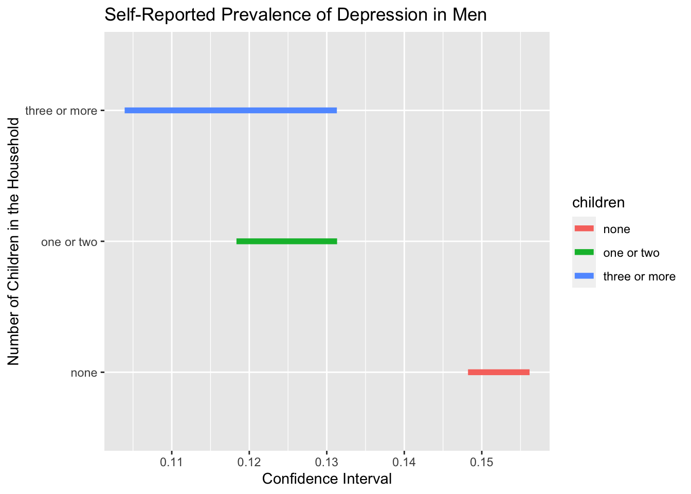

On prevalence of self-reported depression diagnosis
Summary statistics
Below is the unweighted counts of the all included demographic variables, exposure, and other covariates, dichotomized by whether they self-reported whether they’ve ever been told by a physician that they had depression.
tb1_unweighted_depr =
brfss_design$variables %>%
tbl_summary(by = depression, percent = "row",
include = c(sex, race, age, marital_status,
children,
education, income, employment,
general_health, exercise),
type = list(exercise ~ "categorical"))
tb1_unweighted_depr| Characteristic | no, N = 339,3551 | yes, N = 82,3691 |
|---|---|---|
| sex | ||
| male | 168,770 (86%) | 27,421 (14%) |
| female | 170,585 (76%) | 54,948 (24%) |
| race | ||
| white | 250,983 (79%) | 64,746 (21%) |
| black | 26,369 (85%) | 4,740 (15%) |
| asian | 9,689 (91%) | 943 (8.9%) |
| hispanic | 27,451 (83%) | 5,809 (17%) |
| other | 16,306 (78%) | 4,597 (22%) |
| Unknown | 8,557 | 1,534 |
| age | ||
| 18-29 | 33,942 (74%) | 11,662 (26%) |
| 30-49 | 83,279 (77%) | 24,708 (23%) |
| 50-64 | 88,671 (79%) | 23,462 (21%) |
| 65+ | 125,520 (85%) | 21,670 (15%) |
| Unknown | 7,943 | 867 |
| marital_status | ||
| married | 186,616 (85%) | 34,008 (15%) |
| not married | 148,902 (76%) | 47,737 (24%) |
| Unknown | 3,837 | 624 |
| children | ||
| none | 246,175 (81%) | 58,799 (19%) |
| one or two | 64,796 (79%) | 17,258 (21%) |
| three or more | 19,756 (80%) | 4,981 (20%) |
| Unknown | 8,628 | 1,331 |
| education | ||
| less than high school | 18,499 (77%) | 5,505 (23%) |
| high school or some college | 175,986 (79%) | 46,401 (21%) |
| bachelors or higher | 142,919 (83%) | 30,253 (17%) |
| Unknown | 1,951 | 210 |
| income | ||
| <=35000 | 69,109 (72%) | 27,180 (28%) |
| 35000-75000 | 84,240 (81%) | 20,403 (19%) |
| >75000 | 95,056 (84%) | 18,196 (16%) |
| Unknown | 90,950 | 16,590 |
| employment | ||
| employed | 178,686 (83%) | 37,780 (17%) |
| homemaker/student/retired | 128,202 (84%) | 25,312 (16%) |
| unemployed | 25,935 (59%) | 18,234 (41%) |
| Unknown | 6,532 | 1,043 |
| general_health | ||
| excellent | 68,145 (91%) | 7,098 (9.4%) |
| very good/good | 226,664 (82%) | 50,675 (18%) |
| fair/poor | 43,850 (64%) | 24,406 (36%) |
| Unknown | 696 | 190 |
| exercise | ||
| yes | 263,198 (82%) | 56,602 (18%) |
| no | 75,595 (75%) | 25,616 (25%) |
| Unknown | 562 | 151 |
| 1 n (%) | ||
We make the following observations about the above summary counts:
- Prevalence of self-reported depression is higher in women than men.
- Asians are the least likely to self-report depression, while whites and people of race/ethnicities other than white, black, Asian, and Hispanic are the most likely to self-report depression.
- Prevalence of self-reported depression among young people is higher than older people.
- Prevalence of self-reported depression is higher among those who are not married.
- It seems like the number of children in the household is not correlated to self-reported depression.
- People with higher education level and higher income are less likely to self-report depression.
- Unemployed people are more likely to report depression than employed people.
- People who report less than excellent health and who haven’t had any physical exercise in the past 30 days have higher prevalence of self-reported depression.
Below is the weighted summary counts:
tb1_weighted_depr =
brfss_design %>%
tbl_svysummary(by = depression, percent = "row",
include = c(sex, race, age, marital_status,
children,
education, income, employment,
general_health, exercise),
type = list(exercise ~ "categorical"))
tb1_weighted_depr| Characteristic | no, N = 191,542,8701 | yes, N = 46,041,5781 |
|---|---|---|
| sex | ||
| male | 99,500,744 (86%) | 16,393,899 (14%) |
| female | 92,042,125 (76%) | 29,647,679 (24%) |
| race | ||
| white | 112,895,339 (78%) | 32,009,823 (22%) |
| black | 23,303,389 (84%) | 4,291,361 (16%) |
| asian | 12,703,074 (91%) | 1,332,811 (9.5%) |
| hispanic | 32,493,834 (85%) | 5,868,660 (15%) |
| other | 5,656,678 (77%) | 1,697,833 (23%) |
| Unknown | 4,490,556 | 841,090 |
| age | ||
| 18-29 | 35,486,538 (76%) | 11,387,083 (24%) |
| 30-49 | 61,495,315 (80%) | 15,652,910 (20%) |
| 50-64 | 46,455,630 (81%) | 11,214,442 (19%) |
| 65+ | 43,991,698 (86%) | 7,373,245 (14%) |
| Unknown | 4,113,688 | 413,897 |
| marital_status | ||
| married | 101,249,447 (85%) | 18,219,846 (15%) |
| not married | 87,989,536 (76%) | 27,458,884 (24%) |
| Unknown | 2,303,886 | 362,848 |
| children | ||
| none | 122,143,010 (80%) | 30,172,012 (20%) |
| one or two | 48,533,234 (81%) | 11,518,261 (19%) |
| three or more | 15,213,688 (81%) | 3,529,676 (19%) |
| Unknown | 5,652,938 | 821,629 |
| education | ||
| less than high school | 21,880,694 (79%) | 5,692,232 (21%) |
| high school or some college | 108,434,382 (79%) | 28,621,633 (21%) |
| bachelors or higher | 60,033,855 (84%) | 11,622,411 (16%) |
| Unknown | 1,193,938 | 105,303 |
| income | ||
| <=35000 | 41,377,054 (74%) | 14,798,030 (26%) |
| 35000-75000 | 43,264,193 (80%) | 10,648,342 (20%) |
| >75000 | 52,598,380 (84%) | 10,317,886 (16%) |
| Unknown | 54,303,243 | 10,277,319 |
| employment | ||
| employed | 111,765,422 (83%) | 22,530,933 (17%) |
| homemaker/student/retired | 56,850,743 (82%) | 12,101,554 (18%) |
| unemployed | 18,540,394 (63%) | 10,761,197 (37%) |
| Unknown | 4,386,311 | 647,893 |
| general_health | ||
| excellent | 41,710,557 (91%) | 4,284,883 (9.3%) |
| very good/good | 125,306,650 (82%) | 28,236,459 (18%) |
| fair/poor | 24,159,962 (64%) | 13,428,961 (36%) |
| Unknown | 365,701 | 91,275 |
| exercise | ||
| yes | 149,128,636 (82%) | 32,458,153 (18%) |
| no | 42,181,935 (76%) | 13,489,745 (24%) |
| Unknown | 232,299 | 93,680 |
| 1 n (%) | ||
We can see that the same observations above hold in the weighted summary counts.
We take closer looks at how gender might interact with the following demographic variables to affect self-reported depression:
Gender, number of children in family, and depression
We are interested in the differential impact of the number of children in the household on self-reported depression among men and women. Below is a barplot on this topic:
brfss_design %>%
group_by(sex, children, depression) %>%
summarize(depression_prev = 100*survey_mean(na.rm = T, vartype = c("ci"))) %>%
filter(!is.na(children), depression == "yes") %>%
select(-depression) %>%
ggplot(aes(x = children, y = depression_prev, fill = sex)) +
geom_bar(position="dodge", stat="identity") +
geom_errorbar(aes(ymin=depression_prev_low, ymax=depression_prev_upp),
width=.2, position=position_dodge(.9))
One interesting observation is that men who have children in the household have significantly lower prevalence of self-reported depression while women who have children don’t. We do a chi-square test incorporating the survey weights to verify this observation:
# For women
brfss_design %>%
filter(sex == "female") %>%
select(children, depression) %>%
svychisq(~children + depression, . , statistic="adjWald") %>%
broom::tidy()## Multiple parameters; naming those columns ndf, ddf## # A tibble: 1 × 5
## ndf ddf statistic p.value method
## <dbl> <dbl> <dbl> <dbl> <chr>
## 1 2 223450 0.431 0.650 Design-based Wald test of associationbrfss_design %>%
filter(sex == "male") %>%
select(children, depression) %>%
svychisq(~children + depression, . , statistic="adjWald") %>%
broom::tidy()## Multiple parameters; naming those columns ndf, ddf## # A tibble: 1 × 5
## ndf ddf statistic p.value method
## <dbl> <dbl> <dbl> <dbl> <chr>
## 1 2 194145 32.0 1.29e-14 Design-based Wald test of associationAs expected, based on the chi-squared test, the number of children in the household is significantly associated with self-reported depression among men but not women.
Gender, race, and depression
Next, we examine how gender and race together associate with self-reported depression.
brfss_design %>%
group_by(sex, race, depression) %>%
summarize(depression_prev = 100*survey_mean(na.rm = T, vartype = c("ci"))) %>%
filter(!is.na(race), depression == "yes") %>%
select(-depression) %>%
ggplot(aes(x = race, y = depression_prev, fill = sex)) +
geom_bar(position="dodge", stat="identity") +
geom_errorbar(aes(ymin=depression_prev_low, ymax=depression_prev_upp),
width=.2, position=position_dodge(.9)) We can see that not only is the prevalence of self-reported depression
higher in women than men, the same holds true for all race/ethnicities
included in the data set.
We can see that not only is the prevalence of self-reported depression
higher in women than men, the same holds true for all race/ethnicities
included in the data set.
Gender, age, and depression
brfss_design %>%
group_by(sex, age, depression) %>%
summarize(depression_prev = 100*survey_mean(na.rm = T, vartype = c("ci"))) %>%
filter(!is.na(age), depression == "yes") %>%
select(-depression) %>%
ggplot(aes(x = age, y = depression_prev, fill = sex)) +
geom_bar(position="dodge", stat="identity") +
geom_errorbar(aes(ymin=depression_prev_low, ymax=depression_prev_upp),
width=.2, position=position_dodge(.9)) Based on the plot above, it seems that, for women, the prevalence of self-reported depression remains stable between age group 30-49 and 50-64, but decreases significantly between age group 18-29 and 30-49 as well as between age group 50-64 and 65+. The same trend is displayed among men as well but in smaller magnitude.
This gap in the magnitude of change in prevalence of self-reported depression indicates that aging might affect self-reported depression among women and men differently.